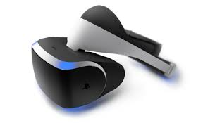
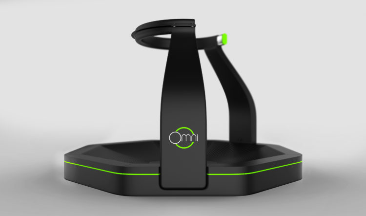
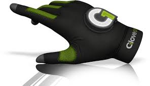

Nous avons confirmé que la réalité virtuelle englobe tous les appareils permettant de nous immerger dans cet univers synthétique .
Aujourd’hui, de nombreuses accessoires VR sont accessibles au grand public pour que le joueur se prolonge dans un monde artificiel .
Les Casques de la Réalité Virtuelle :

Le casque de la réalité virtuelle est le premier accessoire et l'accessoire le plus connu dans le domaine de la réalité virtuelle,
il rend nos jeux stupéfiants de réalisme.
C'est un système sonore et visuel qui sert à communiquer avec les autres utilisateurs
et ajouter à votre jeu vidéo différents effets odorants et sensoriels en utilisant des capteurs. Ajoutez du vent, de l'air chaud, du brouillard d'eau, des vibrations et des effets odorants à
vos scènes pour faire l'expérience d'une présence réaliste dans le monde virtuel.
Statut : Disponible
Prix : allant de 2000 à 7000$
Tapis roulant de la réalité virtuelle:

La tapis roulante de la réalité virtuelle est plate-forme de mouvement de réalité virtuelle active,
où vos actions dans le monde virtuel sont contrôlées par le moteur de jeu comme marcher ou courir,
créent un sentiment d'immersion sans précédent qui ne peut pas être expérimenté assis.
Cette technique permet aux utilisateurs de vivre un nouveau niveau de jeu. Elle transforme l'expérience de jeu et vous plonge dans des quêtes virtuelles tout en vous gardant en forme pour le monde réel.
Le joueur peut marcher, courir et fait des différentes actions
Statut : Disponible
Prix : allant de 100 à 900$
Gants de la realité virtuelle :

La physique et les corps mous sont encore assez problématiques à calculer en temps réel. C'est un autre obstacle devant VR,
les interactions d'objet. Dans le jeu traditionnel, vous n'aviez qu'un seul point d'interaction, la souris ou le croix, et des valeurs binaires absolues,
maintenant, lorsque vous ajoutez les doigts et l'élan, est au-delà de ce que la plupart des moteurs de jeu peuvent faire.
Cette technologie permet le meilleur repérage des mouvements des mains et gérer une certaine physique avec des primitives simples, comme des sphères et des boîtes,
mais quand il s'agit de l'interaction avec des outils, comme un marteau ou un ciseau, vous devez tricher.
Cette technique capte les gestes des mains et des doigts de l’utilisateur avec une précision et transmet
les mouvements vers les moteurs de jeu d'où le joueur peut interagir direct avec le jeu
Statut : Disponible
Prix : 250$
Le fauteuil immersif:

Cette technique permet au joueur de jouer de manière confortable tous en stimulant un environement immersif pareil à l'envirpnemet réel.
Il inclut des fonctions pratiques, On trouve par exemple une boîte vitesse pour les jeux de course, des haut-parleurs intégrés...
Certains fauteuils immersifs offrent aux utilisateurs plusieurs degrés de liberté pour faciliter le contrôle et le déplacement dans les jeux vidéo.
On peut trouver aussi des autres options tel que la date et horloge .Le fauteuil immersif a un système visuel et sonore très performant.
Statut : Disponible
Prix : allant de 3 000 à 10 000$